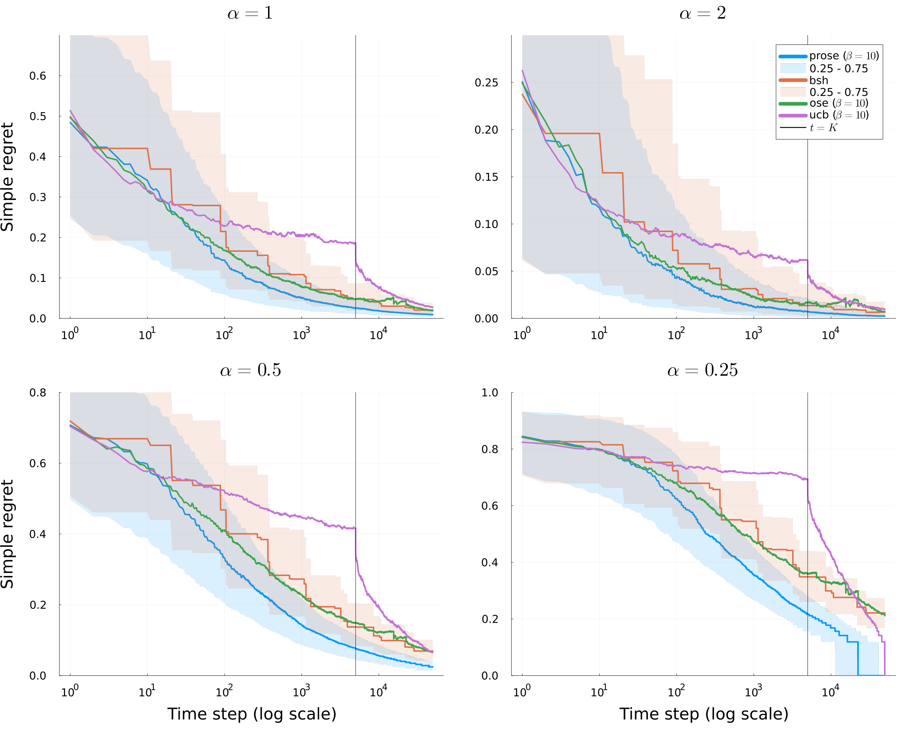

Main Question
Given quantile function \(\lambda\),
What simple reward can we achieve?
Consider a two-armed bandit problem, \(\mathcal A=\{1, 2\}\)
we observe:
\(\newcommand{\and}{\quad \mathrm{and} \quad}\)
\(X_{1,s} = \mu_{1} + \varepsilon_{1,s} \quad \and \quad X_{2,s} = \mu_{2} + \varepsilon_{2,s}\)
At each timestep \(t\)
Motivation:
Defined as
\(R = \sum_{t=1}^n (\mu_1 - \mu_{j_t})\)
Optimism in face of uncertainty:
Choose arms that maximizes upper-confidence bound
\(UCB_{a,t} \asymp \hat \mu_a + \frac{c}{\sqrt{N_{a,t}}}\)
Assume \(\mu_1 > \mu_2\), let \(\Delta = \mu_1 - \mu_2\) be the gap
Main idea. If the confidence interval are disjoint, we detect best arm:
Simplified condition.
\(\frac{1}{\sqrt{t}} \lesssim \Delta\)
We detect best arm after time \(t \gtrsim 1/\Delta^2\)
\(R \lesssim \max(\frac{\Delta}{\Delta^2}, \Delta t) \lesssim \sqrt{t}\)
(worst case when \(\Delta \asymp 1/\sqrt{t}\))
Let \(\mathcal A = \{1, 2, \dots, \}\).
Observations for arm \(a\) (if ever observed):
\(X_{a,s} = \mu_a + \varepsilon_{a,s}\)
\(X_{a,s} = \lambda_{\gamma(a)} + \varepsilon_{a,s}\)
\(\rightarrow\) \(\gamma(a)\) represents a continuous rank of arm \(a\)
\(\rightarrow\) “best arm” corresponds to \(\gamma(a)=0\)
\(\rightarrow\) Unbounded distribution of arm means iff \(\lambda_0 = +\infty\)
Consider the case where \(\lambda_{\gamma(a)} \in \{0, \epsilon\}\) and
\(\mathbb P(\lambda_{\gamma(a)} = \epsilon) = \eta_0\):
\(\lambda_{\eta}= \begin{cases} \epsilon &\text{if } \eta \leq \eta_0\\ 0 &\text{otherwise } \\ \end{cases}\)
De Heide et al. (2021) established that it is impossible to adapt to \(\eta_0\) to get a “good” cumulative regret
It is possible to adapt to \(\eta_0\) if we consider simple regret
At each timestep \(t\), the learner:
The simple expected reward is \(\lambda_{\gamma(\hat r_t)}\)
Two main criteria in the litterature:
\(\to\) These are anytime criteria.
\(\to\) In fixed budget settings \(t \in \{1, \dots, T\}\), simple regret can be defined as \(\lambda_0 - \lambda_{\hat a_t}\)
\(\to\) we need boundedness (\(\lambda_0 < +\infty\))to define them!
Given quantile function \(\lambda\),
What simple reward can we achieve?
Carpentier & Valko (2015) established the minimax rate (up to polylogs) when \(\lambda_{\eta} \asymp 1-\eta^\alpha\)
Zhao et al. (2023) proposed a parameter free algorithm and general bounds on simple regrets
They recover in particular the results of Carpentier & Valko (2015) in their specific class of distributions
Let \(\mathcal D\) be any distribution (potentially unbounded).
Define for \(0< \rho < \nu < 1\):
\(G(\rho, \nu) = \frac{\nu}{\rho} \frac{1}{(\lambda_{\rho}- \lambda_{\nu})^2} \lor \frac{1}{\rho}\)
\(G(\rho, \nu) = \frac{\nu}{\rho} \frac{1}{(\lambda_{\rho}- \lambda_{\nu})^2} \lor \frac{1}{\rho}\)
We are able to detect quantile \(\eta\) at time \(t\)
\(\exists \rho < \eta\) s.t. \(\forall \nu \geq \eta\),
\(G(\rho, \nu) \ll t\)
(\(\ll\) hides a polylog factor in \(t\) and error probability \(\delta\))
This results is also valid for unbounded distributions !
| Type of the distribution \(\mathcal{D}\) | Quantile Function \(\lambda_{\eta}\) | Upper Bound on \(\gamma(\hat r_t)\) | Lower Bound on \(\lambda_{\gamma(\hat r_t)}\) |
|---|---|---|---|
| Bernoulli | \(u\mathbf{1}\{\eta \leq \eta_0\}\) | \(\eta_0 \mathbf{1}\{\mathbf{t} \geq \frac{\zeta^2}{\eta_0 u^2}\}\) | \(u \mathbf{1}\{\mathbf{t} \geq \frac{\zeta^2}{\eta_0 u^2}\}\) |
| Beta (\(\alpha < 1/2\)) | \(1-\eta^{\alpha}\) | \(\frac{1 \lor \frac{\zeta^2}{\alpha^2}}{\mathbf{t}}\) | \(1-\left(\frac{1 \lor \frac{\zeta^2}{\alpha^2}}{\mathbf{t}}\right)^\alpha\) |
| Beta (\(\alpha \geq 1/2\)) | \(1-\eta^{\alpha}\) | \(\frac{1}{\mathbf{t}} \lor \left(\frac{\zeta^2}{\mathbf{t}}\right)^{\frac{1}{2\alpha}}\) | \(1-\frac{1}{\mathbf{t}^\alpha} \lor \sqrt{\frac{\zeta^2}{\mathbf{t}}}\) |
| Pareto (\(\alpha < 1/2\)) | \(\eta^{-\alpha}\) | \(\frac{1}{\mathbf{t}} \lor \left( \frac{\zeta^2}{\alpha^2\mathbf{t}}\right)^{\frac{1}{1-2\alpha}}\) | \(\mathbf{t}^\alpha \land \left(\frac{\alpha^2\mathbf{t}}{\zeta^2}\right)^{\frac{\alpha}{1-2\alpha}}\) |
| Pareto (\(\alpha \geq 1/2\)) | \(\eta^{-\alpha}\) | \(\frac{1}{\mathbf{t}}\lor \mathbf{1}\{\mathbf{t} \geq \zeta^{1/\alpha}\}\) | \(\mathbf{t}^\alpha \mathbf{1}\{\mathbf{t} \geq \zeta^{1/\alpha}\}\) |
\(LCB_{a,t} = \hat \lambda_{\gamma(a)} - \frac{C}{\sqrt{N_{a,t}}} \quad \text{and} \quad UCB_{a,t} \asymp \hat \lambda_{\gamma(a)} + \frac{C}{\sqrt{N_{a,t}}}\)
At each time \(t\):
There is also a deterministic version (better in practice and computationally more efficient)
\(\exists a \leq Z\) s.t. \(\gamma(a) \lesssim 2^{-k}\)
\(\mathbb P(t^{k/\log_2(t)} \leq Z \leq t^{k/\log_2(t)}) = 1/\log_2(t)\)
Recall that for \(\rho < \nu\), we define
\(G(\rho, \nu) = \frac{\nu}{\rho} \frac{1}{(\lambda_{\rho}- \lambda_{\nu})^2} \lor \frac{1}{\rho}\)
Theorem
Let \(\eta \in (0,1)\) and assume that \(G(\rho, \nu) \leq \tfrac{t}{C\log^C(t/\delta)}\).
Then, with probability at least \(1-\delta\), OSE recommends arms \((\hat r_t)_{t \geq 1}\) that satisfy \(\gamma(\hat r_t) \leq \eta\)
Start from some arbitrary ranking \(\pi\). For each \(t\):
Naive implementation: time complexity \(\asymp \tilde O(t^2)\)
Deterministic version + cascading trick for max: time complexity \(\asymp \tilde O(t)\)
